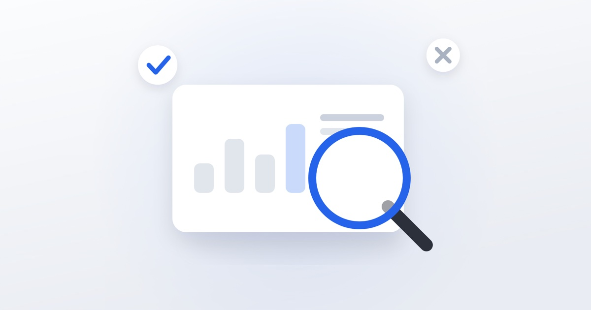

Аудит соцсетей: как самому проверить свой аккаунт

Прежде чем заказывать ведение или запускать рекламу, стоит понять, что не так с аккаунтом сейчас. Ниже — порядок самостоятельной проверки. Отвечайте честно: половина проблем видна невооружённым глазом.
Блок 1. Упаковка
- По имени профиля понятно, чем вы занимаетесь и в каком городе?
- В шапке есть конкретное предложение, а не набор эмодзи?
- Есть призыв к действию и работающая ссылка?
- Аватар читается в маленьком размере?
- Закреплены публикации с услугами, ценами и кейсами?
- Навигация подписана понятными словами?
Блок 2. Контент
- Публикации выходят регулярно или рывками?
- Есть ли среди последних 12 постов хотя бы один кейс с цифрами?
- Есть ли отзывы?
- Указана ли где-то цена или её диапазон?
- Есть ли видео — или только статичные картинки?
- Публикации отвечают на вопросы клиентов или рассказывают о компании?
Блок 3. Цифры
Откройте статистику за последние 30 дней и выпишите:
- охват и его динамику;
- долю новых пользователей в охвате;
- количество переходов в профиль;
- клики по ссылке;
- количество новых диалогов.
Дальше считайте переходы между этапами. Если охват большой, а переходов в профиль мало — контент не вызывает интереса к вам. Если переходов много, а диалогов нет — проблема в упаковке.
Блок 4. Вовлечённость
- Какие публикации собрали больше всего сохранений? Что у них общего?
- Есть ли комментарии и отвечаете ли вы на них?
- Растёт ли число подписчиков или держится на месте?
- Есть ли всплески отписок после определённых публикаций?
Блок 5. Обработка обращений
Самый недооценённый блок. Проверьте:
- Сколько времени в среднем проходит до первого ответа?
- Есть ли ответы на сообщения в вечернее время и в выходные?
- Что вы пишете первым сообщением — приветствие или сразу по делу?
- Задаёте ли вопросы, чтобы понять задачу, или сразу называете цену?
- Что происходит, если человек не ответил, — вы возвращаетесь к нему?
Блок 6. Конкуренты
Откройте три аккаунта конкурентов и сравните: что у них есть, чего нет у вас. Не для копирования, а чтобы увидеть привычные для ниши форматы, которые вы пропустили.
Что делать с результатами
Выпишите все «нет» и отсортируйте по стоимости внедрения. Обычно самые дешёвые и самые результативные правки — упаковка профиля и скорость ответов. Их можно сделать за день, и они дают эффект сразу.
Если по чек-листу вопросов больше, чем ответов, — мы делаем аудит с разбором и планом на месяц. Напишите, посмотрим ваш аккаунт.